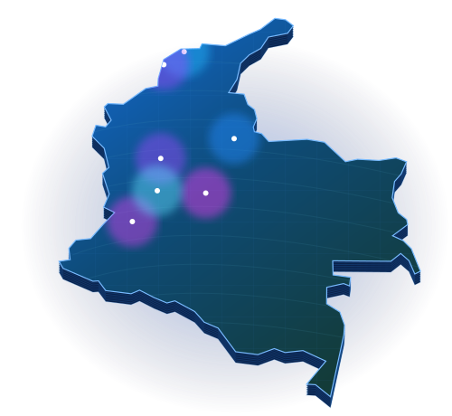

Bienestar
al alcance
de todos.
Dos momentos de consumo. Un universo de personas, hábitos y afinidades para conectar el bienestar con la vida cotidiana.
¿Dónde están estas personas?
Ciudades prioritarias para explorar
afinidad con el bienestar.

de conexión
Medellín
Cali
Barranquilla
Cartagena
Bucaramanga
Pereira
Audiencia única planeable
Un universo de oportunidades para conectar bienestar en cada momento del día.
Referencias de planeación para dimensionar las oportunidades de la marca.
Día y Noche se superponen: los universos no se suman.
Un universo de afinidades.
Tres maneras de vivir Ritual. Explora sus momentos, hábitos y señales.
Perfiles ilustrativos · 119 señales de afinidad para conectar con sus rutinas.
Cada audiencia, su plataforma.
Explora los intereses por entorno y descubre qué clúster está presente en cada uno.
Selecciona un canal para ver señales y oportunidades.
Google y YouTube comparten señales de la matriz. Los porcentajes describen registros por perfil, no alcance medido.
Conexiones que se vuelven rituales.
Explora los 119 registros originales por persona, plataforma y momento de consumo.
Categorías
Proyecta tu alcance con Ritual.
Ajusta la combinación de inversión entre Día + Noche y visualiza el alcance acumulado
y la frecuencia promedio a lo largo de las olas de campaña en 2027.
Define el peso de inversión entre los dos productos.
Ritual Día + Ritual Noche
− intersección
al cierre de las 12 olas
Personas únicas por ola de campaña · proyección.
Exposiciones por persona alcanzada · proyección.
Planea la inversión por medio.
Recrea distintas inversiones y explora cómo se mueven el alcance y la frecuencia.
Mix total: 100%. Los demás canales se ajustan al mover un porcentaje.
Compara tus escenarios.
| Escenario | Inversión | Alcance estimado | Frecuencia | Impresiones |
|---|